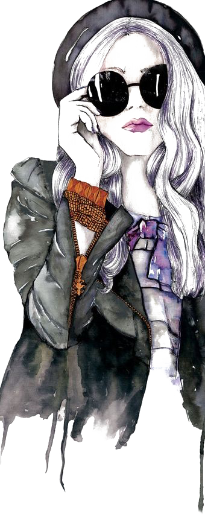

Dispositivos de atención a víctimas de violencia de género
Espacios de asistencia integral a mujeres que hayan sufrido violencia y sus hijos que, de acuerdo a las necesidades de cada caso, ofrecen diferentes servicios

- Línea de ayuda 144
- Línea de ayuda 191
Existen diferentes establecimientos preparados para dar respuesta a las víctimas según sus necesidades
Estos lugares brindan diferentes servicios a las mujeres en situación de violencia doméstica y/o sexual con sus hijas/os:
- Evaluación y orientación.
- Asesoramiento y patrocinio jurídico.
- Abordaje psicosocial.
Centros Integrales de la Mujer
Comuna 1
CIM Isabel Calvo: Humberto 1º 250
Comuna 2
CIM Alicia Moreau: Vicente López 2050 4 piso (Recoleta Mall)
Comuna 3
CIM Margarita Malharro: 24 de noviembre 113
Los Centros Integrales de la Mujer (CIM) son espacios donde las mujeres pueden acudir para obtener información y asesoramiento sobre sus derechos, como así también las herramientas necesarias para hacer frente a situaciones de violencia y lograr su empoderamiento.